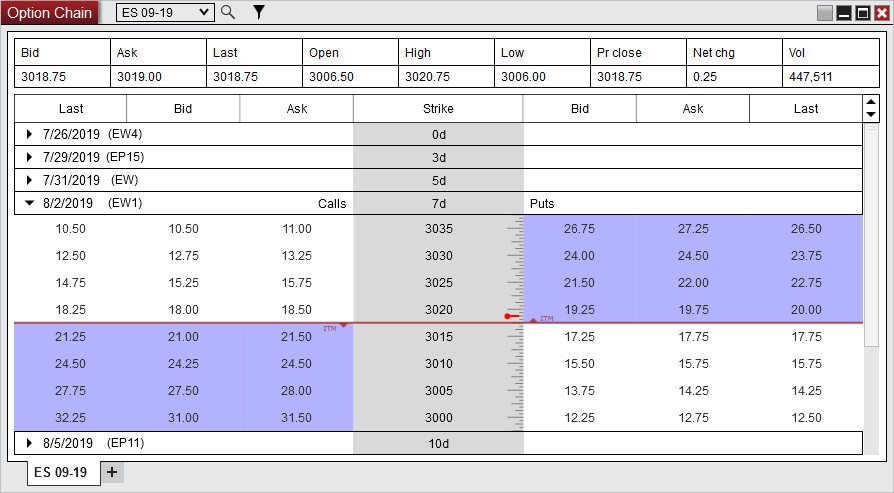
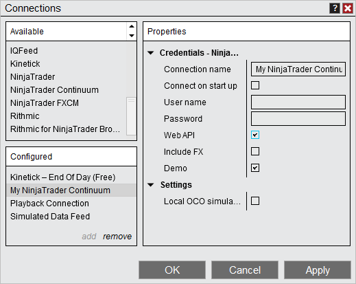
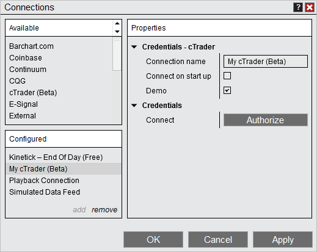
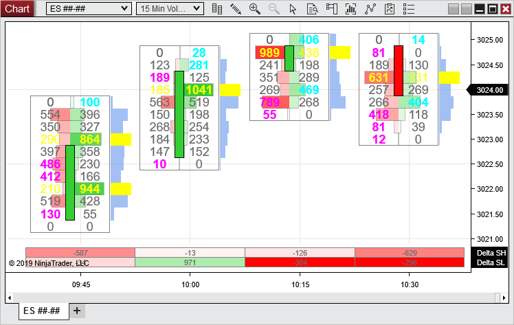
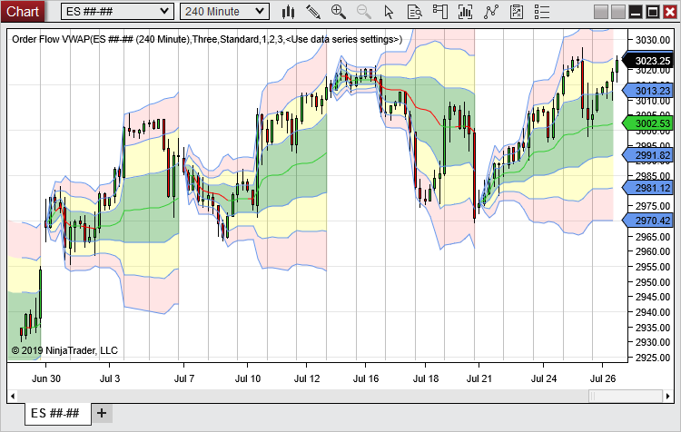
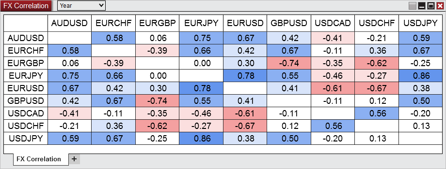
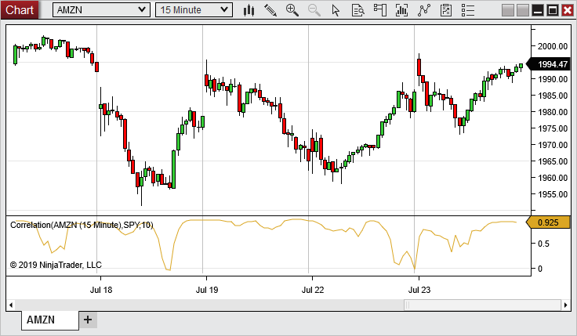
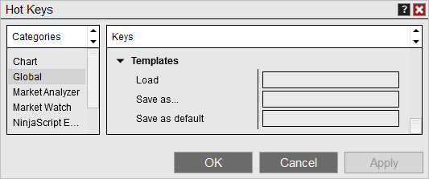
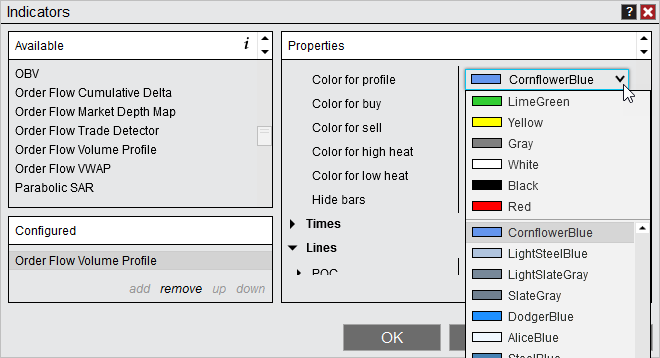
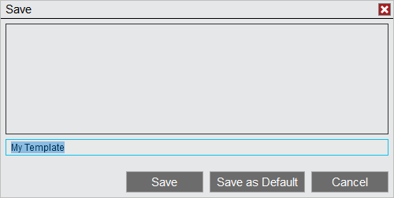

|
<< Click to Display Table of Contents >> 8.0.19.1 |


|
8.0.19.1
|
<< Click to Display Table of Contents >> 8.0.19.1 |
|
8.0.19.0 Release Date
September 23, 2019
Attention IQFeed Users: •For NinjaTrader 8.0.19.0, it is mandatory that you update to the latest IQFeed 6.1 client. |
Attention developers: •When working with D2DFactory to create Direct X resources, this must be done from the charts UI thread otherwise there will be a performance impact. This is now enforced in 8.0.19.0. If your script does not follow this policy it will not be compatible with 8.0.19.0 and a log error will be thrown. Please contact [email protected] if any questions. |
Features |
Added Option Chain and support for Options Option Chain Feature #13844
Options support has been added and can be accessed with the new Option Chain window for users utilizing NinjaTrader Continuum connection and have enabled ‘Web API’ (Beta). Linking with order entry windows and selecting a bid or ask quote within the option window will load the option into the order entry window for order placement. See the Option Chain section for more information.

|
Added Web API support for NinjaTrader Continuum in Beta NinjaTrader Continuum Feature #13421
The new Web API adds support for options to NinjaTrader Continuum
 |
cTrader available in beta cTrader Feature #13895
With an enabled license key you can now access your cTrader 'netting' account(s) in NinjaTrader. This is currently in beta.
 |
Order Flow Volumetric enhancements Order Flow + Feature # 13614
Multiple features have been added to further increase customization and functionality. The candlestick can now be centered on plot. A Size filter property has been added to only include values greater than the threshold. Delta SL & Delta SH have been added to the bar statistics to measure how long since the delta touched the high/low of the bar. Imbalance can now be calculated horizontally. Bar volume distribution can now be set to the right of the bar.
 |
Order Flow VWAP enhancements Order Flow + Feature # 13611
Multiple features have been added to further increase customization on functionality. A Reset interval can now be set to Sessions, Weeks, or Months. Each standard deviation can now have color and opacity individually set.
 |
Added FX Correlation Window FX Correlation Feature # 13661
The FX Correlation window is used to display a correlation between multiple forex instruments. Values close to 1 indicate movement in the same direction. Values close to -1 indicate movement in opposite directions. Values near 0 indicate no correlation. See the FX Correlation section for more information.
 |
Added Correlation indicator Indicator Feature # 13755
The correlation indicator will plot the correlation of the data series to a desired instrument. Values close to 1 indicate movement in the same direction. Values close to -1 indicate movement in opposite directions. Values near 0 indicate no correlation.
 |
Added additional hot keys Hot Key Feature # 13534
The new hot keys make working with NinjaTrader faster and easier. Charts - Auto scale and return for charts Workspaces - Save all Workspaces Templates - Load/ Save as../ Save as default
 |
Added recently used colors to the top of the color picker UI Feature # 13700
Now the most recently used colors used are placed at the top of the color picker, making it easier to quickly select frequently used colors.
 |
Added save as default button Templates Feature # 13672
Save as default has been added to the Indicator, Strategy, Strategy Analzyer, and Drawing tool template dialogs for a more intuitive experience.
 |
Issue# |
Status |
Category |
Comments |
13781 |
Fixed |
Alerts, Market Analyzer |
Resolved a scenario where CrossAbove/Below alert did not trigger when expected |
13980 |
Fixed |
ATM Strategies |
Stop strategy logic did not resume when manually disconnecting/reconnecting |
13679 |
Fixed |
Barchart, Charts |
Historical data was not loading for tick based charts from midnight to the current time |
13851 |
Fixed |
Bars |
Kagi chart style rendered lines when brush was set to transparent |
13989 |
Fixed |
Bars, Order Flow + |
A renko chart with Order Flow Cumulative Delta applied could get an error |
13840 |
Fixed |
BarsType |
Point and figure chart with Price set to Highs and Lows could display large erroneous bars |
13941 |
Changed |
Chart |
Improved performance for charts which have lots of rendering |
13963 |
Changed |
Chart |
Optimized crosshair performance |
13723 |
Fixed |
Chart |
Renaming a chart tab that isn't the active tab resulted in an error |
13738 |
Fixed |
Chart |
Zoom in selection box could draw into x and y axes |
13768 |
Fixed |
Chart |
Compressed chart with Nymex Energy RTH template caused unreadable time axis |
13798 |
Fixed |
Chart |
Charts were missing data around rollover date with UTC+8 |
13821 |
Fixed |
Chart |
PnF charts could time-stamp a session close bar with the next days time |
13833 |
Fixed |
Chart |
Resolved a scenario where removing a second data series from a chart resulted in an error |
13945 |
Fixed |
Chart |
Expanding the price axis too far resulted in the time scales disappearing |
13947 |
Fixed |
Chart |
Typing numbers in a chart less than 10 would change the minute interval rather than return invalid instrument |
13959 |
Fixed |
Chart |
Resolved a scenario where removing a second data series, that was using imported data, resulted in an error |
13926 |
Fixed |
Chart, DrawingTools |
Show global drawing objects set to false could result in duplicate drawing tool names resulting in conflictions
|
13784 |
Fixed |
Chart Trader, Hot Key |
Modifying orders with Hot Keys were slow to display change on Chart Trader |
13805 |
Fixed |
Chart, Strategy |
Loading a strategy template allowed the strategy to be enabled when disconnected resulting in an error |
13596 |
Fixed |
City Index |
Resolved a scenario where attempting to trade an unmapped CFD had unexpected results |
13734 |
Fixed |
City Index, Orders |
Positions were not volume weighted |
13960 |
Fixed |
CoinBase |
Resolved a scenario where converting time zones for L2 timestamps resulted in an error |
13902 |
Fixed |
Connections |
An error occurred when trying to edit an account while connecting |
13827 |
Changed |
Control Center |
Changed display of strategy parameter tooltips on Strategies tab to match Strategy Analzyer |
13901 |
Fixed |
Control Center |
Getting Connected window could be on top of error when incorrect credentials were entered |
13931 |
Fixed |
Control Center |
Removed erroneous Add Account right click menu item from Accounts tab |
13792 |
Fixed |
Control Center, Playback |
When connected to Playback Filter by list showed Sim101 rather than Playback |
13747 |
Fixed |
Data Grids |
Multi-Line tool-tips did not display as expected |
13743 |
Fixed |
Data Grids, Orders |
Orders grid multi-line rejected messages did not display as expected |
13681 |
Fixed |
Data, Playback |
When downloading current day data at times it would not download to the current time |
13724 |
Fixed |
DrawingTool |
Anchor values changed when attaching to all charts |
13910 |
Fixed |
DrawingTool |
Andrew's Pitchfork did not display when chart anchors were far out of range |
13838 |
Fixed |
DrawingTool, Chart |
Global drawing objects were merged into old contracts on reload of historical data |
13954 |
Fixed |
DrawingTool, Workspaces |
Resolved some scenarios where global drawing objects would duplicate or no longer be global when working with multiple workspaces |
13787 |
Fixed |
eSignal, Data |
Historical data was not downloaded for yesterday when equidistant bar spacing was enabled |
13746 |
Changed |
FXCM |
Changed addresses to https |
13847 |
Fixed |
Historical Data Window |
Excluded bars were not excluded on reload of historical data |
13875 |
Fixed |
Historical Data Window |
Cryptocurrency historical data would not import with decimals for volume |
13732 |
Fixed |
Historical Data Window, Playback |
Unexpected contracts showed in Historical Data 'Edit' window when using the Playback connection |
13898 |
Fixed |
Hotlist Analyzer |
Workspace with more than 1 Hotlist window would not retain the name of the Hotlist selected on restart |
13690 |
Fixed |
Indicator |
Running ROC on Cumulative Delta resulted in an error |
13753 |
Fixed |
Indicator |
Wiseman indicators did not display an indicator name in the "Configured" list after their "Label" setting text was removed |
13763 |
Fixed |
Indicator |
Block Volume's real-time value did not match it's historical value |
13884 |
Changed |
Interactive Brokers |
New adapter is out of beta |
13916 |
Fixed |
Interactive Brokers |
Resolved a scenario where an error from modifying the order quantity did not show a pop up error |
13899 |
Fixed |
Interactive Brokers, Data |
Real-time data could be a tick off what was expected with beta |
13818 |
Fixed |
Interactive Brokers, Strategies |
Unmanaged multi instrument strategies submitting orders to 10 instruments caused strategy position to become out of sync |
13789 |
Fixed |
Instruments |
Tick size addition 0.00000001 was not working as expected |
13797 |
Fixed |
Instruments |
Changes made to copied instrument lists could be reflected in the original list |
13687 |
Fiked |
Kinetick, Data |
Last Close was not loading for some instruments after workspace was closed and reopened |
13702 |
Fixed |
Kinetick, News |
Resolved a scenario where a crash could occur while News window was open |
13817 |
Changed |
Kinetick, IQFeed |
Improved daily bar handling for after hours charting |
13722 |
Fixed |
Market Analyzer |
After setting the background for the grid once it could not be reset to another color and retained it's value |
13748 |
Fixed |
Market Analyzer |
Removing cell while scroll-bar was visible could result in an error |
13793 |
Fixed |
Market Analyzer |
Enable color distribution setting could change foreground color unexpectedly |
13794 |
Fixed |
Market Analyzer |
T & S trend column did not update when changing the rows instrument |
13814 |
Fixed |
Market Analyzer |
Updating a row from a valid instrument to an invalid one continued to show values from previous instrument |
13937 |
Fixed |
Market Analyzer |
Resolved a scenario where adjusting indicator column settings was not reflected in the label |
13780 |
Fixed |
Market Analyzer, Workspaces |
Column widths did not save in workspace |
13866 |
Fixed |
Market Analyzer, Workspaces |
Saving workspace with an invalid instrument in the Market Analyzer resulted in an error |
13689 |
Fixed |
Market Watch, Market Analyzer |
Market Watch and Market Analyzer ChartNetChange column did not use max available scale range at times |
13940 |
Fixed |
NinjaScript |
Importing a script that has a warning when importing, the warning could not be selected since Import Successful window was on top |
13979 |
Fixed |
NinjaScript, Strategy Builder |
A strategy built in the Builder with an action to print Volume with a multiplier applied would not compile |
13951 |
Fixed |
NinjaScript, Chart |
Strategies with ImmediatelySubmit resubmitted orders after disconnecting then reconnecting when strategy was applied to a chart |
13993 |
Fixed |
NinjaScript, Tick Replay |
Resolved a scenario where GetTime() resulted in an error when connecting on startup |
13704 |
Fixed |
NinjaScript Editor |
Lock up could occur when compiling then opening a new NinjaScript Editor, Chart, or Strategies dialog window |
13942 |
Fixed |
NinjaScript Editor |
Error could occur if compile was pressed repeatedly |
13973 |
Fixed |
NinjaScript Editor |
Qty selector pad could be available for the NinjaScript editor indicator wizard |
13890 |
Fixed |
NinjaScript Editor, NinjaScript |
Opening NinjaScript Editor with bad 3rd party dll loaded resulted in a crash |
13717 |
Fixed |
NinjaScript, Chart |
IsOverlay could not be set in State.Configure |
13733 |
Fixed |
NinjaScript, Chart |
Using the global drawing object overload caused duplicated objects when switching instruments if the window was linked |
13882 |
Fixed |
NinjaScript, Indicator |
ZigZag indicator was returning incorrect bar values for the HighBar and LowBar method |
14000 |
Fixed |
NinjaScript, DrawingTool |
A NinjaScript that utilizes DrawingTool templates could have an error when reloading NinjaScripts or opening the workspace |
13949 |
Changed |
Orders |
Conversion Rate logic for CFD executions will prioritize the CFD currency rate over the FX currency rate |
14026 |
Fixed |
Orders |
Restored execution rate could be erroneously updated after a disconnect and reconnect |
13957 |
Changed |
Order Flow + |
Improved Order Flow Market Depth Map performance |
13678 |
Fixed |
Order Flow + |
Order Flow Volume Profile indicator with a template which sets a color to default resulted in an error |
13804 |
Fixed |
Order Flow + |
Volume Profile could cause region to go out of sync with plots at times |
13820 |
Fixed |
Order Flow + |
Order Flow Cumulative Delta values were off relative to Order Flow Volumetric at beginning of session |
13904 |
Fixed |
Order Flow + |
When Volumetric bar's text was hidden some rows could be highlighted together in one color |
13929 |
Fixed |
Order Flow + |
Resolved a scenario where the first real-time drawn Order Flow Volume Profile would disappear once the bar closed |
13946 |
Fixed |
Order Flow + |
Order Flow Volume Profile with Price profile did not plot the z |
13953 |
Fixed |
Order Flow + |
Volumetric bar used with a secondary non-volumetric bar would result in the secondary series width getting stuck on 1 when compressing and decompressing |
13796 |
Fixed |
Order Flow +, Drawing |
Drawing an Order Flow Volume Profile which has a default template already set rendered the tool on top of bars rather than behind |
13930 |
Fixed |
Market Analyzer |
Fixed 'Calculating...' text alignment |
13782 |
Fixed |
Playback |
Resolved some scenarios where Playback controller did not display |
13920 |
Fixed |
Playback |
Playback would play beyond the end data when PC had German date/region settings |
13948 |
Fixed |
Playback, Historical Data |
Playback data did not show in the Historical Data window on first download |
13810 |
Fixed |
Playback, Strategy |
Resolved a scenario where enabling a strategy while connected to playback resulted in a crash |
13897 |
Fixed |
Risk |
On a new installation orders submitted to sim account with NinjaTrader Brokerage Default Risk template applied threw an error on order submission |
13824 |
Fixed |
Regionalization, Historical Data Window |
Importing data with language set to Spanish resulted in an error |
13767 |
Fixed |
Regionalization, Strategy Analyzer |
Optimization results right click context menu text could be cutoff in German |
13735 |
Fixed |
Regionalization, Tool Tips |
Some tool-tips were not localized properly |
13684 |
Fixed |
Regionaliztion, Control Center |
Log and trace files failed to send when platform language was set to German |
13867 |
Fixed |
Rithmic, Instruments |
Opening chart for ZQ 08-19 resulted in an error |
13850 |
Changed |
ShareAdapter |
Changed Sender Display Name to From Name |
13854 |
Changed |
ShareAdapter |
Updated default AOL Mail settings |
13574 |
Fixed |
Strategy |
Strategy on renko bar would cancel SetProfitTarget & SetTrailingStop orders on 1st trailing stop modification |
13594 |
Fixed |
Strategy |
An error could occur after enabling then disabling a strategy and attempting to change it's properties |
13713 |
Fixed |
Strategy |
Resolved some scenarios where no strategy is selected when opening the strategies window |
13731 |
Fixed |
Strategy |
Resetting Sim101 account then re-enabling a strategy resulted in an error |
13595 |
Fixed |
Strategy Analyzer |
Stop limit orders could fill outside bar on gap scenarios in backtesting |
13695 |
Fixed |
Strategy Analyzer |
Custom performance metrics did not work for multi-instrument optimization combined row |
13803 |
Fixed |
Strategy Analyzer |
Viewing optimization result on second open returned 0’s |
13807 |
Fixed |
Strategy Analyzer |
When changing from Backtest to Optimize the strategy that was selected was lost and defaults to the first in the list |
13819 |
Fixed |
Strategy Analyzer |
Optimizer results were not copying over optimized data series value correctly |
13829 |
Fixed |
Strategy Analyzer |
Could attempt to open combined results which resulted in an error |
13831 |
Fixed |
Strategy Analyzer |
Resolved a scenario where running an Optimization on a strategy with drawings could result in an error |
13837 |
Fixed |
Strategy Analyzer |
Resolved a scenario where if NinjaScript Editor was open it would be brought in front of other windows by Strategy Analyzer actions |
13842 |
Fixed |
Strategy Analyzer |
Error occurred when clicking View Strategy in Optimization results |
13874 |
Fixed |
Strategy Analyzer |
A genetic optimization that optimized doubles could give parameters that are outside of the step range |
13888 |
Fixed |
Strategy Analyzer |
Multile screens with different DPI settings caused irregular behavior |
13887 |
Fixed |
Strategy Analyzer |
Error could occur when hovering mouse over NinjaTrader windows in the Taskbar while in Strategy Analyzer |
13894 |
Fixed |
Strategy Analyzer |
Opening a walk forward optimization in a new tab resulted in an error if it was from the view results window |
13905 |
Fixed |
Strategy Analyzer |
Chart display had an unexpected right click context menu on the toolbar |
13961 |
Fixed |
Strategy Analyzer |
Right-clicking in the Strategy Analyzer Log without selecting a row resulted in an error |
13975 |
Fixed |
Strategy Analyzer |
Clicking a result of AI Generate then selecting Display Chart had Sample ATM Strategy listed in the top left of the chart |
13982 |
Fixed |
Strategy Analyzer |
AI Generated strategy which used CrossBelow and Close Series would not compile |
13984 |
Fixed |
Strategy Analyzer |
AI Generate Trade Result listed Strategy as Sample ATM |
13986 |
Fixed |
Strategy Analyzer |
Strategy Analyzer Column Result listed SampleATMStrategy on AI Generate Run |
13987 |
Fixed |
Strategy Analyzer |
Log filters were not working |
13696 |
Fixed |
Strategy Analyzer, NinjaScript |
Calling RemoveDrawObject did not not remove objects from chart in backtest or optimization |
13783 |
Fixed |
Strategy Builder |
DEL key did not work for manually entered strings |
13776 |
Fixed |
Strategy Builder |
When using a Custom Series CrossAbove Numeric value an error occurred |
13777 |
Fixed |
Strategy Builder |
When adding a data series a current bar check was not added resulting in an error |
13785 |
Fixed |
Strategy Builder |
Quantity input had to be deleted before a new value could be entered |
13716 |
Fixed |
Strategy, Control Center |
DaysToLoad set in SetDefaults was not applied when adding a strategy to the Strategies tab |
13881 |
Fixed |
Strategy, Control Center |
Resolved a scenario where a position update on the Strategies grid resulted in an error |
13816 |
Fixed |
Strategy, Order Flow + |
Order Flow Cumulative Delta values incorrectly reported in strategy script when session line crossed |
13572 |
Fixed |
SuperDOM |
Changing properties of a column and applying it affected the width of all columns |
13703 |
Fixed |
SuperDOM |
Reloading historical data with volume column applied failed to load |
13706 |
Fixed |
SuperDOM |
Volume column width modified on reload of historical data |
13709 |
Fixed |
SuperDOM |
Modifying the size of the price ladder when a column is applied then adding another column reset the price ladder size |
13822 |
Fixed |
SuperDOM |
A column set to invisible then back to visible did not display |
13860 |
Fixed |
SuperDOM |
Position entry marker was not updated on account change |
13872 |
Fixed |
SuperDOM |
Resetting sim account caused bid and ask values to not display until scrolled |
13908 |
Fixed |
SuperDOM |
Increased rendering performance when using indicators and resolved a deadlock scenario |
13911 |
Fixed |
SuperDOM |
Resolved a scenario where a configured indicator display name did not update |
13933 |
Fixed |
SuperDOM |
Orders tab filter was not maintained when duplicating window |
13913 |
Fixed |
SuperDOM, Templates |
Resolved a scenario where a template resulted in an error |
13725 |
Fixed |
SuperDOM, ATM Strategies |
ATM Target +- buttons were not selectable if ATM strategy was submitted with "Select active ATM strategy template on order submission" |
13891 |
Fixed |
Templates, Orders Flow + |
Using a template could result in Volumetric bars loading with wrong chart style |
13944 |
Fixed |
Tick Replay, Order Flow + |
Reloading NinjaScript while using Tick Replay and Order Flow Cumulative Delta could result in an error |
13826 |
Fixed |
Trade Performance, NinjaScript |
The label for EntryTime was labeled as ExitTime in ToString |
13923 |
Fixed |
UI |
Resolved an error that could be caused by a corrupt UI file |
14005 |
Fixed |
Workspaces, Chart |
Closing background workspace caused Databox to disappear |
8.0.19.1 Release Date
October 18, 2019
Issue # |
Status |
Category |
Comments |
13857 |
Fixed |
Translations |
Updated various Portuguese translations |
14040 |
Fixed |
CQG/Continuum Web API |
Fixed various issues account and order issues |
14042 |
Fixed |
IQ Feed |
Fixed incorrect handling for tick-based charts |
14043 |
Fixed |
Order Flow + - VWAP |
Fixed 'session' reset of VWAP in certain scenarios |
14052 |
Fixed |
Translations |
Fixed F1 links to go to appropriate translated help resources |
14056 |
Fixed |
Barchart |
Resolved a real-time data issue |
14058 |
Fixed |
Chart |
Global drawing objects could no longer change visibility after switching instruments |
14069 |
Fixed |
IQ Feed |
Historical bars were timestamped incorrectly for minute bars |
14070 |
Fixed |
Order Flow + VWAP |
Standard deviation lines would appear in the Drawing Objects dialog even when disabled |
14078 |
Fixed |
IQ Feed |
Resolved 'Illegal characters in path' error when attempting to connect |
14098 |
Fixed |
Kinetick |
Resolved an issue where the current daily bar would not be refreshed properly on open of a new chart |
14100 |
Fixed |
UI |
Configuring a connection with the same name could cause conflicts |
14106 |
Fixed |
UI |
Resolved error "The given key was not present in the dictionary" error on connecting to a provider under a certain scenario |